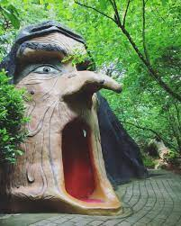
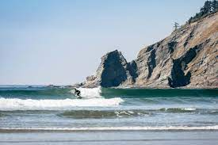

My Favorite Places
The Coolest Spots in Oregon
Cascade Head

This is one of the most beautiful spots along the Oregon Coast
- It overlooks the Salmon River Estuary
- You can hike here!
Enchanted Forest

Creepy, Silly, and Fun!
- A whimsically crafted fairytale theme park just north of Salem, OR
- The park was created by Roger Tofte in the 1960s and opened in 1971
- I was both fascinated and terrified by the Witch's mouth (pictured above) when I was a child.
Short Sands Beach

Beautiful Beach tucked away in Oswald West State Park
- One of the most popular beaches in Oregon (good luck finding a parking spot)
- A Great place to surf, as it is protected by the wind
- To access you must hike through the beautiful forest of Oswald West SP